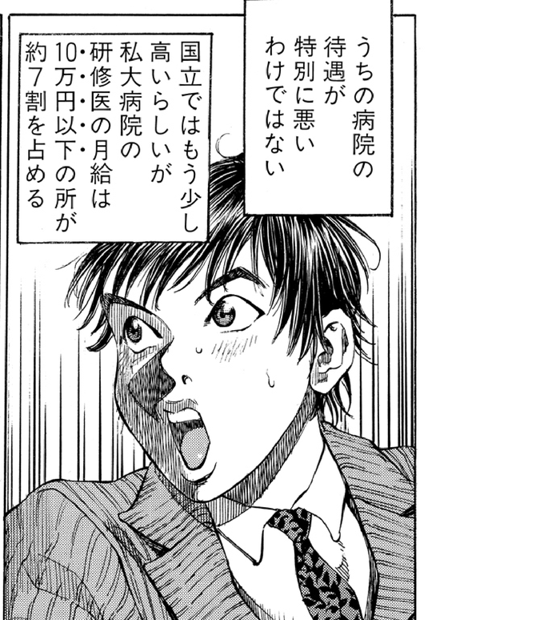
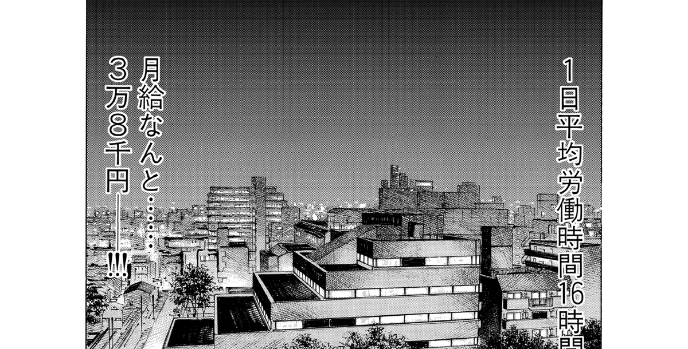
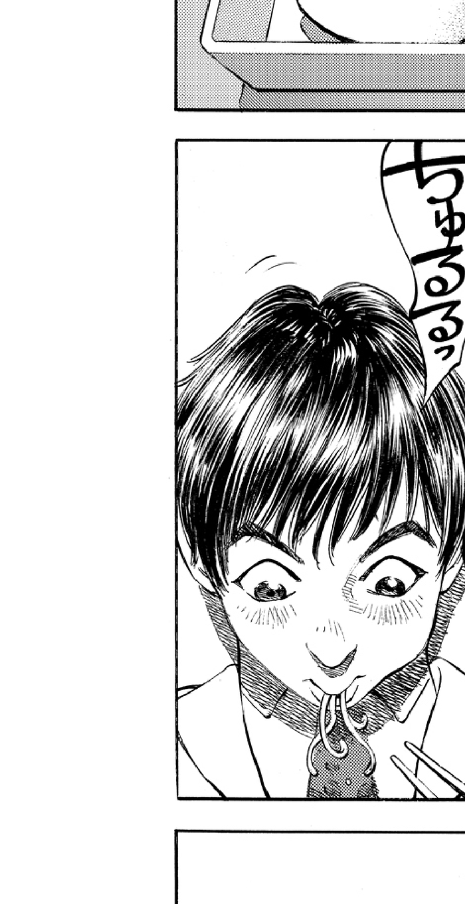
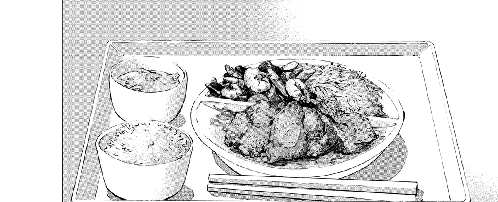

「ジャンプ」×「つながり」。
「読む」から「語る」へ。
コマ単位で熱狂をつなぐジャンプ＋公式拡張SNS。
現在のSNSでは、読者が抱く「最高の一コマ」への熱い想いが、様々な要因で遮断されています。


「この伏線やばい！誰かと語りたい！」
ジャンプ＋で毎週最新話を追っているが、学校では同じ温度感で語れない。
「素晴らしいシーン。イラストを描いて残したい」
作品愛から二次創作（ファンアート）を描くが、公式から怒られないか常に不安を抱えている。

読んだ直後の「コマごとの感情」を蓄積。マンガというコンテンツそのものの価値を底上げする。
読了範囲でのネタバレ制御と、公式運営による権利保護。誰もが100%の熱量で語れる場。
高品質な考察・二次創作が、そのままジャンプ＋内の「新たな作品への導線」として資産化される。

マンガビューワーと完全に統合された新しいコミュニケーション体験。
感情が動いた「コマ」を
📱 長押し
他者の熱い考察・ファンアートを
👀 みんなの熱狂を読む
自分もタグをつけて
🔥 想いを投下
SNSのタイムラインからマンガ本編へ。マンガ本編からSNSへ。
単一のコマだけでなく、「1話のこのコマ」と「100話のこのコマ」を選択して同時にコメント可能。
読書体験を損ねる最大の敵「見たくないネタバレ」をシステムレベルで遮断。
ファンアートや二次創作が「作者の利益・作品の盛り上がり」に直結するエコシステム。
集英社が運営する場所だからこそ、ユーザーは権利侵害の不安なくフルパワーで創作できる。
画像に対する制約を取り払うことで、TikTokやXにも負けない視覚的なエンゲージメントをアプリ内で構築。
「ホットコメント」やユーザー生成の「有益考察リスト」がメディア化。
「いいジャン」「返信」「リスト」による交流。
漫画のコマ枠（直線・余白）を高精度に検出するエッジAIモデルを活用。
検出されたコマ領域に「ユニークなPanel ID」を付与。ページや解像度が変わっても座標がズレない。
複雑なブチ抜きゴマや見開きに対しては、運営・編集側で手軽にバウンディングボックスをアジャストできる管理ツールを具備。
何百万もの読者が同時にマンガを読む環境でのコメント取得。
安心・安全なファンコミュニティを維持するために。
「読了後」にアプリを閉じていたユーザーが、コメント欄と語り合いの場に留まることで、アプリ滞在時間が爆発的に増加。
「このコマの伏線」から他作品や過去の巻へ飛ぶ導線が整備され、単行本購入・PVの底上げ（LTV向上）に直結。
翻訳機能をUGCにも適用することで、日本の考察が世界のファンへ届き、グローバルなマンガコミュニティを形成。
| 機能 | アル | ジャンがり |
|---|---|---|
| 使用場所 | 外部SNS | アプリ内完結 |
| 起点 | 単行本単位 | コマ単位 |
| 二次創作 | ☓ | ◎ (許諾済) |
外部ツールでは成し得ない「本編とシームレスにつながる体験」。
ユーザーの「好き」という感情が、直接的に作品とプラットフォームへ還元されるエコシステム。
1つのコマIDに数万のコメントが紐づく状態を想定。GraphQLサブスクリプションとRedisを活用し、リアルタイムで熱狂を同期。
ジャンプ+海外版とDBを共通化。コメントの「自動翻訳」機能により、言語の壁を越えた世界規模の考察・ファンアート交流が実現。
アニメ放送と完全に同期。「このシーンのアニメ化がエグい」とコマを指定して語る、出版社の垣根を超えた新たなトレンド発火点へ。
(Months 1-3)
一部の連載作品で「コマAI検出基盤」と「テキストコメント機能」をテスト公開。UGCの発生率と読了後の滞在時間を検証。
(Months 4-6)
モデレーション体制を確立させ、「画像・動画（二次創作）」アップロードを解禁。複数コマ選択とマイページ実装。
(Months 7-12)
他言語展開に伴い、コメントの自動翻訳機能を追加。世界中のマンガファンがシームレスに交流。
アイデアだけでは終わらせない。確実な技術とパッションを持ったチーム。